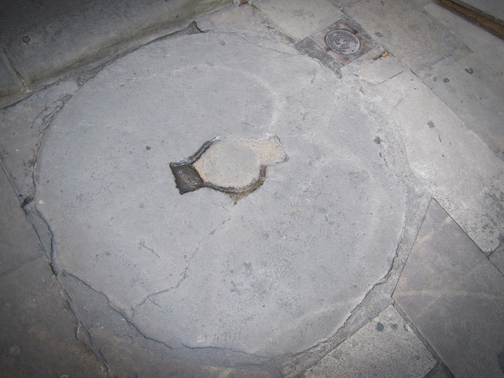

You have reached number 10 Carrer Paradís, the headquarters of the Centre Excursionista de Catalunya.
Before going any further, look at the ground at the entrance. That millstone is not a simple decoration. It is the geographical marker indicating the exact summit of Mount Táber.
You are standing on the 'roof' of ancient Barcino, the exact spot where the Romans decided to erect their most important temple.
Now, to prove you are here, look at the metal plaque on the wall.
What exact height (in meters) does the plaque indicate we are at?